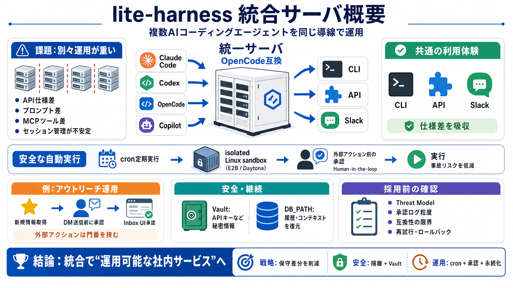

Harness Security Practices: Protecting Data & Ensuring Compliance
Illustration of a white and blue rocket launching on a dark grid background with the text 'Harness 101' in blue blueprin…

複数のAIコーディングエージェントを、同じ統一サーバ経由で運用するための設計思想を素早く把握します（統合基盤 / Integration Server）。
エージェントごとに別サーバを立てると、API仕様差（入力・プロンプト・MCPツール）やセッション管理の不安定さが運用負担になります。
lite-harnessは、複数エージェントを「統一サーバ」にラップし、OpenCode互換として同一Dockerイメージで維持できるようにします。
エージェントはCLI / API / Slack経由で利用・デプロイでき、チームで同じ運用体験を共有しやすくなります（提供手段 / Channels）。
定期実行はcronスケジュールで行い、isolated Linux sandbox（E2BまたはDaytona）で動かすことで、事故リスクを安全寄りに設計します（隔離 / Isolation）。
※自動化は外部へ影響し得るため、隔離が重要という前提で整理されています。
例として「GitHubスターの新規情報→LinkedInへDM送信」をエージェントで自動実行し、送信前に承認を挟むフローが示されています。
実行内容が外部へ波及する局面（例：送信前）では、人の承認（Human-in-the-loop）をUIフローに組み込み、意図せぬ操作を抑えます。
VaultでAPIキーなど秘密情報を安全に保持し、DB_PATHなどで永続化すれば、再起動後も履歴やモデルコンテキストを復元できます。
README抜粋だけでは「セキュリティ保証の範囲」「承認ログの粒度」「互換性の限界」が不明なため、運用採用前の追加確認が必要です。
lite-harnessは、複数エージェントを統合サーバ化し、共通運用（CLI/API/Slack）、cron実行、隔離、Vault、承認、永続化で「運用可能な社内サービス」に近づけます。
Illustration of a white and blue rocket launching on a dark grid background with the text 'Harness 101' in blue blueprin…